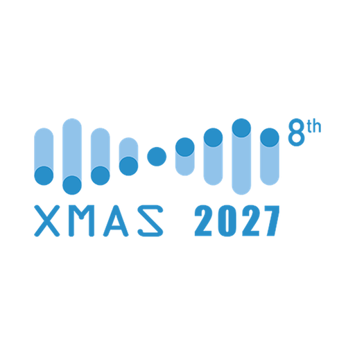

研序 Yanxu
科研工作站。把科研日志、文献、课题、待办、日程和专注时间放在一起。
iOS · 无需注册→

案例：XMAS 2027会议 App
给学术会议做的官方参会助手。议程、日程、报告人，离线装进手机。
iOS · Android · HarmonyOS→
示意网站
把你的研究做成一个可以动手试的网站。教具、展示、科普，从机制到上线。
案例：台风探秘→
科研工作站。把科研日志、文献、课题、待办、日程和专注时间放在一起。

案例：XMAS 2027给学术会议做的官方参会助手。议程、日程、报告人，离线装进手机。
把你的研究做成一个可以动手试的网站。教具、展示、科普，从机制到上线。
一个把整场会议装进手机，一个把台风实验搬进浏览器。都不是 PPT，是可以点开玩的。
scholarlylife 是一个做科研工具的小团队。起点很简单：自己记不住实验做到哪一步，就写了研序；自己开会找不到下一场在哪，就写了会议 App；想讲清楚一个机制，就做了台风探秘。
所以我们不做大而全的平台，只做三件事：让研究者把研究记录下来，让参会的人在现场不慌，让复杂的科学过程能被动手试一遍。
学术那边的东西，放在 这里。